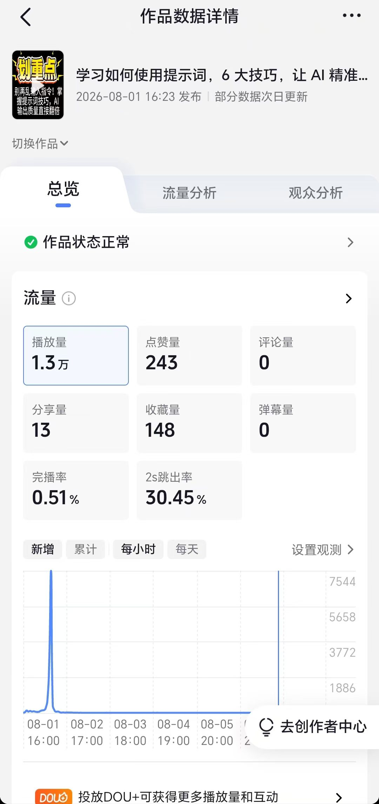

你好，我是尤蝶
学医，也热爱技术 —— 17 张 AI 证书、3 个落地项目、3 款复刻游戏、一个持续更新的 AI 科普账号。我想把这份行动力带进科创部。
CONTENTS · 目录
今天的六个板块
关于我
医学背景 × AI 能力的跨界学习者
技能矩阵
从提示词到微调的大模型应用链路
AI 项目实践
三个已经跑起来的真实案例
游戏开发作品
AI 体感、飞行射击、策略对战
17 张权威证书
3D 球体交互展示 · 点击查看编号
我能带来什么
落地、内容、选题、分享四件事
OVERVIEW · 一页速览
这个暑假，我做到了什么
PART · 01
认识我
跨界复合 · 持续学习 · 实战导向
01 / ABOUT ME
关于我
尤蝶
跨界复合 · 医学背景 + AI 能力
既懂垂直领域的真实需求，又懂大模型工具链，擅长在专业场景里找到技术结合点 —— 我的第一个 RAG 项目就做在中医骨伤方向。
持续学习 · 60 天 17 张证书
从零基础到拿下阿里达摩院、讯飞、Datawhale 等 8 家机构认证，靠的是高密度的自主学习节奏和把课程啃到底的韧劲。
实战导向 · 每个技能都要落地
不满足于听课拿证：知识库、工具包、自媒体、三款游戏，学过的东西全部做成了能演示、能用、有数据反馈的真实作品。
02 / SKILL MATRIX
技能矩阵
常用工具链
PART · 02
实战成果
证书是门票，项目才是实力
03 / AI PROJECTS
三个已经跑起来的真实案例
中医骨伤科 RAG 智能问答系统
基于阿里云百炼搭建垂直领域知识库，完成文档切分、向量检索与多轮对话 Prompt 模板设计，让大模型能基于专业资料准确作答。
AI 提效 Prompt 工具包
沉淀覆盖文案、摘要、数据可视化、PPT 大纲等高频场景的标准化指令库，配套「AI 生成 + 人工审核」机制保证质量，产出报告获导师认可。
AI 科普短视频系列
运营抖音账号做 AI 技术测评：RAG 资讯库驱动选题，大模型生成脚本，A/B 测试优化封面与钩子文案，首播作品自然流量播放 1.3 万。

CONTENT · 真实数据
AI 科普
短视频账号
账号定位 AI 知识与技能科普，作品涵盖提示词技巧、Python 基础语法、开源大模型对比等。下图为首播作品《提示词 6 大技巧》的后台真实数据，点击手机可放大查看。
04 / GAME DEVELOPMENT
游戏开发作品
动动脖子
AI 摄像头体感乒乓 · 人脸关键点识别鼻子控制球拍，跟随教程复刻并跑通完整项目
飞机大战
竖版弹幕射击 · 敌机生成、碰撞判定与计分系统完整实现
坦克大战
经典坦克对战复刻 · 地图、移动射击与对战逻辑编码实现
覆盖 AI 体感 / 飞行射击 / 策略对战 —— 悬停预览，点击观看完整演示
05 / CERTIFICATES
17 张证书 · 悬浮成球
拖拽旋转 · 滚轮缩放 · 悬停放大 · 点击查看编号
球内 17 张证书原件全部悬浮展示 · 来自 8 家权威机构
PART · 03
我能带来什么
不做旁观者，做技术落地的执行人
06 / WHAT I CAN BRING
加入科创部，我能带来什么
AI 工具落地
用大模型、RAG、智能体为部门项目和活动实打实提效，做技术落地的执行人，而不是旁观者。
内容与宣传
有自媒体从 0 做起的实战经验，可负责公众号、短视频的技术科普内容，帮部门扩大校园影响力。
跨学科选题
医学 + AI 的复合视角，能为「互联网+」、挑战杯等科创竞赛提供差异化、有人文温度的项目方向。
分享与培训
乐于输出，可组织 AI 工具分享会与 Workshop，把提示词、智能体技能教给更多同学，带动全员效率升级。